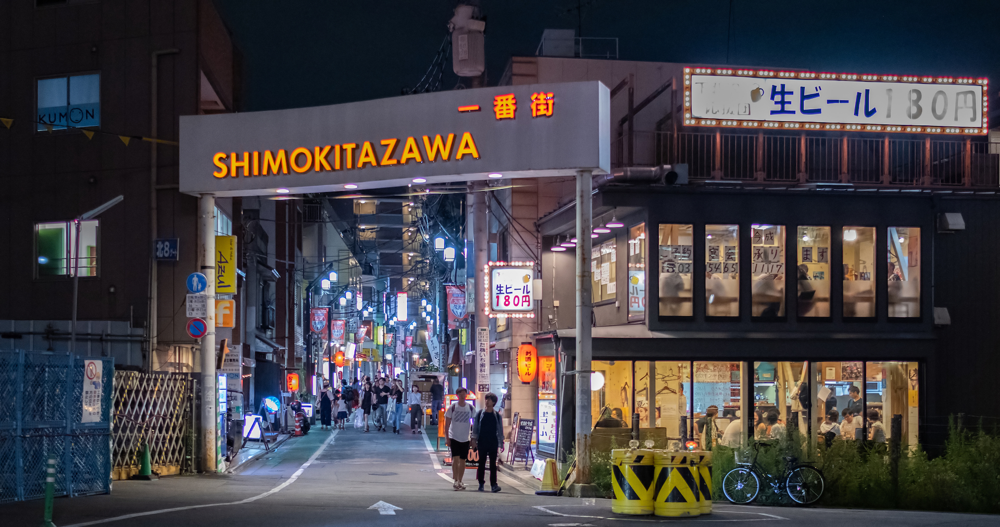

Not Just a Tourist: Tokyo - Day 13
Shimokitazawa
 Credit: TimeOut
Here are your links for the Shimokitazawa area:
GoTokyo
TimeOut
Tokyo Cheapo
Ikebukuro
Credit: Tokyo Cheapo
Here are some helpful links for the Ikebukuro area:
Japan Guide
GoTokyo
Tokyo Cheapo